library(tidycensus)
library(tidyverse)
library(sf)
library(spdep)
library(spatialreg)
library(tmap)
library(units)
library(geojsonsf)
library(tigris)
library(GWmodel)
library(mgcv)
library(patchwork)
library(marginaleffects)
readRenviron("~/.Renviron")Final Project
Introduction
This project analyzes voting results from the 2020 Presidential Election in Georgia and seeks to find geographic patterns in these data. Previous studies have shown that a key factor in the geographic distribution of voting patterns is the relationship between urban and rural areas. This report will study this relationship by classifying voting precincts into low, medium, and high density groups as a way to measure the urban/rural character of these precincts.
The state of Georgia was selected as an area of study for two reasons. First, I am familiar with the geography of the state. Second, Georgia has both highly urban areas in the vicinity of the Atlanta Metropolitan area and highly rural areas outside of Atlanta.
Prior surveys have also measured demographic correlates with voting patterns. For example, those with higher education tend to vote for Democratic Candidates. Polls have also shown that black and Hispanic Americans tend to vote for Democrats as well. This study will analyze these variables at the level of areal units and attempt to determine if the relationship between these correlates and the partisan voting outcomes hold across all geographic locations in the State of Georgia, particularly considering the differing urban and rural status of these locations.
Import libraries
Import Demographic Data
Demographic Data is pulled from the US Census Bureau via the tidycensus API for the 2020 ACS 5-year dataset. Demographic data is obtained at the block group level, which is the finest detail that these data are available. This project will consider 6 demographic variables in three groups:
Race and ethnicity: (1) the ratio of the black to the total population and (2) the ratio of the Hispanic population to the total population
Education: (3) the ratio of people whose highest educational attainment is a bachelors degree to the total population and (4) the ratio of people holding graduate degrees (Masters, Doctoral, or Professional degrees) to the total population
Income: (5) the ratio of the population that is considered to be impoverished and (6) the median income of the geographical unit
year = 2020
vars = c(
"B01003_001E", # Total Population
## Income and Wealth related
"B19113_001E", # Estimate!!Median family income in the past 12 months (in 2020 inflation-adjusted dollars)
"B17010_001E", # Estimate!!Total:
"B17010_002E", #Estimate!!Total:!!Income in the past 12 months below poverty level:
## Education Related
# EDUCATIONAL ATTAINMENT FOR THE POPULATION 25 YEARS AND OVER
"B15003_001E", #Estimate!!Total:
"B15003_022E", #Estimate!!Total:!!Bachelors degree
"B15003_023E", #Estimate!!Total:!!Master's degree
"B15003_024E", #Estimate!!Total:!!Professional school degree
"B15003_025E", #Estimate!!Total:!!Doctorate degree
## Race and Ethnicity
"B02001_001E", # Estimate!!Total:
"B02001_003E", #Estimate!!Total:!!Black or African American alone
#HISPANIC OR LATINO ORIGIN BY RACE
"B03002_001E", #Estimate!!Total:
"B03002_012E" #Estimate!!Total:!!Hispanic or Latino:
)
acs_blockGroups = get_acs(
geography = "cbg",
geometry = TRUE,
output = "wide",
state = "georgia",
variables = vars,
survey = "acs5",
year = year
) %>% st_transform(32617)
acs_blockGroups = acs_blockGroups %>% mutate(
area = st_area(geometry),
density = B01003_001E / (area %>% set_units(km^2)) %>% replace_na(0)%>% drop_units(),
medIncome = B19113_001E,
bachelors = B15003_022E / B15003_001E,
grad = (B15003_023E + B15003_024E + B15003_025E) / B15003_001E,
black = B02001_003E / B02001_001E,
hispanic = B03002_012E / B03002_001E,
poverty = B17010_002E / B17010_001E,
)
acs_blockGroups = acs_blockGroups %>% mutate(densityCategory = ifelse(density > 1000,TRUE,FALSE))
metroATL <- tigris::counties(state="GA",cb=TRUE) %>% st_transform(32617) %>% filter(grepl("Fulton|Gwinnett|Cobb|DeKalb|Clayton",NAME)) #Shape containing the borders of the 5 counties which make up Metro Atlanta
metroATL_bb = st_bbox(metroATL%>% st_buffer(units::set_units(3,mi)))Below are the summaries of the densities of the block groups as well the six variables that will be considered.
summary(acs_blockGroups %>% st_drop_geometry() %>% select(density, black, hispanic, bachelors, grad, poverty, medIncome)) density black hispanic bachelors
Min. : 0.00 Min. :0.00000 Min. :0.00000 Min. :0.0000
1st Qu.: 96.46 1st Qu.:0.05392 1st Qu.:0.00000 1st Qu.:0.0778
Median : 486.41 Median :0.22568 Median :0.03524 Median :0.1538
Mean : 846.39 Mean :0.32664 Mean :0.09030 Mean :0.1889
3rd Qu.: 1083.62 3rd Qu.:0.54369 3rd Qu.:0.11274 3rd Qu.:0.2759
Max. :25702.75 Max. :1.00000 Max. :1.00000 Max. :1.0000
NAs :5 NAs :15 NAs :15 NAs :15
grad poverty medIncome
Min. :0.00000 Min. :0.00000 Min. : 2499
1st Qu.:0.03439 1st Qu.:0.00000 1st Qu.: 51308
Median :0.08494 Median :0.07008 Median : 71870
Mean :0.12144 Mean :0.12249 Mean : 82600
3rd Qu.:0.17556 3rd Qu.:0.18174 3rd Qu.:101515
Max. :1.00000 Max. :1.00000 Max. :250001
NAs :15 NAs :36 NAs :1000 Below are maps showing the population density across all block groups in the state of Georgia. The second map shows a close-up of the Atlanta Metropolitan area. All maps provided in this report will also include a second variation that shows a close up of the Metro Atlanta region with overlays of the county boundaries of the five counties closest to the city of Atlanta: Fulton, Gwinnett, Cobb, DeKalb, and Clayton counties. Population density will be used as a key factor in classifying areas as urban, rural, and intermediate.
mapDensity = tm_shape(acs_blockGroups) + tm_fill(fill="density", fill.scale=tm_scale_continuous_pseudo_log())+tm_title("Population density (log scale)")
mapDensityAtl = tm_shape(acs_blockGroups, bbox=metroATL_bb) + tm_fill(fill="density", fill.scale=tm_scale_continuous_pseudo_log())+ tm_shape(metroATL) + tm_borders() + tm_title("Population density (Log Scale - Metro Atlanta Area)")
tmap_arrange(mapDensity,mapDensityAtl)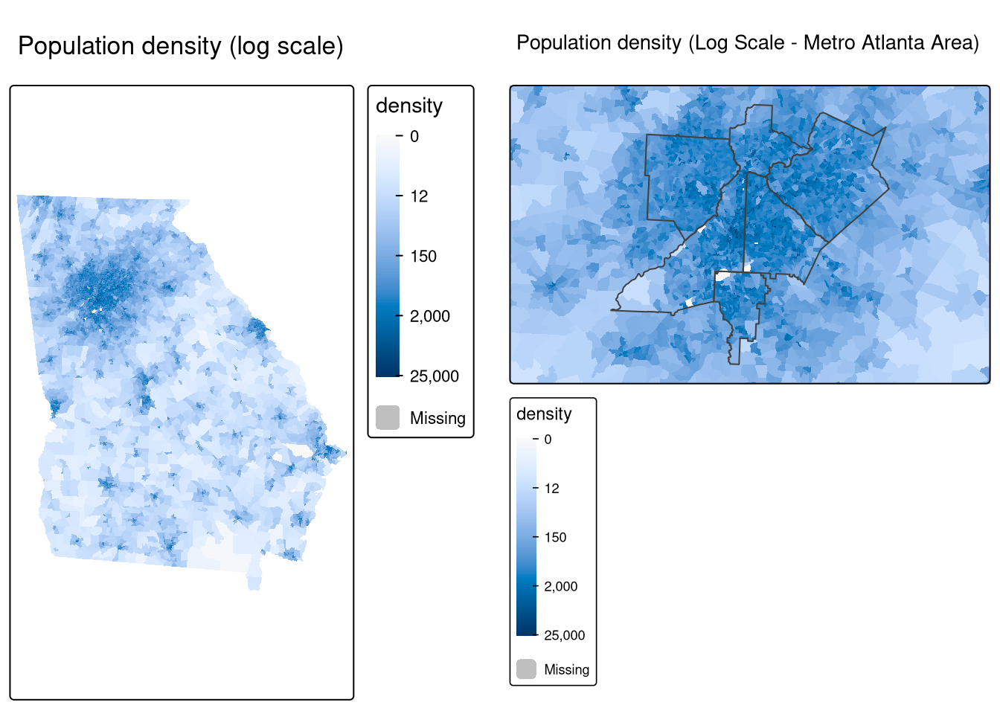
Precinct-level voting data
Next, the voting results at the precinct level are obtained. This is the most granular level at which voting results are available. Unfortunately, there are difficulties in obtaining and using these data. These data are collected and managed at a state-level and so there is no national-level repository of precinct voting data and obtaining it depends on contacting each state’s department of elections. Fortunately, the New York Times’ “The Upshot” has gone through the effort of compiling all data for the 2020 election and has made it freely available on GitHub. (see: https://github.com/TheUpshot/presidential-precinct-map-2020)
precinctVoting = read_file("/home/matt/Documents/School/2024 - 2026 UWF/2025 - 2026/Fall 2025/STA 6990/Final Project/precincts-with-results.geojson") %>% geojson_sf() %>% filter(substr(GEOID,1,2) == "13")%>% st_transform(32617)
precinctVoting = precinctVoting %>% mutate(
demRatio = votes_dem/(votes_dem + votes_rep)
)The map shown depicts partisan makeup of votes in each precinct. Areas that leaned Democratic are colored blue and areas that leaned Republican are colored red. The scale corresponds to the ratio of democratic votes / (democratic + republican votes). A value of 1 indicates all votes in the precinct were democratic, 0.5 indicates an even split, and 0 indicates all were republican. Third-party votes are not included in this analysis, however the total number of third-party votes is negligible.
tmap_mode("plot")
demLead = tm_shape(precinctVoting) + tm_fill(fill="demRatio", fill.scale=tm_scale_continuous(midpoint=0.5,values = c("red","white", "blue")),fill_legend=tm_legend(position="right"))+tm_title("Democratic Lead Percentage")
demLeadAtl = tm_shape(precinctVoting, bbox=metroATL_bb) + tm_fill(fill="demRatio", fill.scale=tm_scale_continuous(midpoint=0.5,values = c("red","white", "blue")),fill_legend=tm_legend(position=tm_pos_out(pos.v = "center")))+ tm_shape(metroATL) + tm_borders() +tm_title("Democratic Lead Percentage (Metro Atlanta Area)")
tmap_arrange(demLead, demLeadAtl)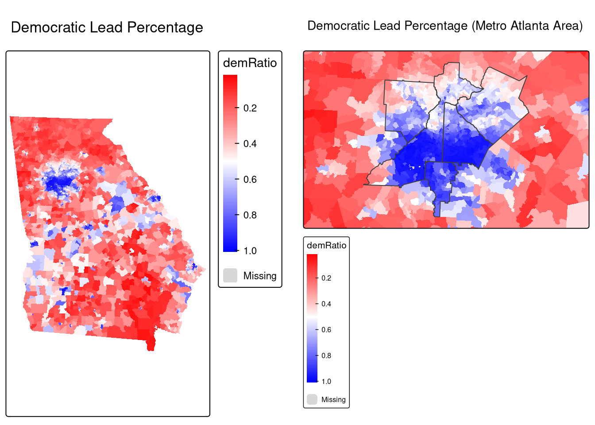
Interpolate census data to voting precincts
Voting precincts do not line up with any census geometry. The voting precincts are usually designed for ease of voting. For example, voting may be held at a local school, church, or community center, and a voting precinct is all people nearby to this polling location. In order to match the demographic data provided by the ACS, the demographic data from the census is interpolated using the interpolate_pw() function from tidycensus. This function uses population-weighted interpolation where the weights are drawn from the census block dataset from TIGRIS to determine the population distribution within the block group and voting precinct geometries.
GA_blocks = get_decennial(
geography = "block",
variables = c("H1_001N"),
geometry = TRUE,
state = "georgia"
)%>% st_transform(32617)sf_use_s2(FALSE)
precinctsInterpolated = interpolate_pw(from = acs_blockGroups%>% select(GEOID,density, medIncome, bachelors, grad, black, hispanic, poverty),
to = precinctVoting,
weights = GA_blocks,
extensive=F,
to_id = "GEOID",weight_column = "value") %>% full_join(precinctVoting %>% st_drop_geometry(), by="GEOID")A map showing the black population is displayed at both the census block group level and the interpolated voting precinct level to demonstrate that the original map and interpolated map visually appear to be similar to verify that the interpolation was successful.
mapBlackRatioACS = tm_shape(acs_blockGroups) + tm_fill(fill="black", fill.scale=tm_scale_continuous())+tm_title("Black Population ratio (2020 ACS 5-year)")
mapBlackRatioInter = tm_shape(precinctsInterpolated) + tm_fill(fill="black", fill.scale=tm_scale_continuous()) +tm_title("Black Population ratio interpolated to Voting Precincts")
mapBlackRatioACSAtl = tm_shape(acs_blockGroups, bbox=metroATL_bb) + tm_fill(fill="black", fill.scale=tm_scale_continuous())+ tm_shape(metroATL) + tm_borders() +tm_title("Black Population ratio (2020 ACS 5-year)")
mapBlackRatioInterAtl = tm_shape(precinctsInterpolated,bbox=metroATL_bb) + tm_fill(fill="black", fill.scale=tm_scale_continuous()) + tm_shape(metroATL) + tm_borders() +tm_title("Black Population ratio interpolated to Voting Precincts")
summary(precinctsInterpolated) GEOID density medIncome bachelors
Length :2653 Min. :4.147e-01 Min. : 13720 Min. :0.00000
N.unique :2653 1st Qu.:5.218e+01 1st Qu.: 54856 1st Qu.:0.09173
N.blank : 0 Median :4.275e+02 Median : 71156 Median :0.15409
Min.nchar: 7 Mean :7.319e+02 Mean : 81249 Mean :0.18524
Max.nchar: 43 3rd Qu.:1.029e+03 3rd Qu.: 96658 3rd Qu.:0.25372
Max. :1.533e+04 Max. :250001 Max. :0.63399
NAs :6 NAs :41 NAs :6
grad black hispanic poverty
Min. :0.00000 Min. :0.00000 Min. :0.00000 Min. :0.00000
1st Qu.:0.05227 1st Qu.:0.08321 1st Qu.:0.01813 1st Qu.:0.03787
Median :0.09014 Median :0.23391 Median :0.04550 Median :0.09112
Mean :0.12223 Mean :0.32531 Mean :0.07570 Mean :0.11567
3rd Qu.:0.16172 3rd Qu.:0.50274 3rd Qu.:0.09740 3rd Qu.:0.16518
Max. :0.55117 Max. :1.00000 Max. :0.80634 Max. :0.68696
NAs :6 NAs :6 NAs :6 NAs :6
votes_dem votes_rep votes_total votes_per_sqkm
Min. : 0.0 Min. : 0.0 Min. : 0 Min. : 0.0
1st Qu.: 283.0 1st Qu.: 251.0 1st Qu.: 865 1st Qu.: 16.1
Median : 754.0 Median : 691.0 Median : 1629 Median : 146.9
Mean : 932.7 Mean : 927.9 Mean : 1884 Mean : 392.4
3rd Qu.:1368.0 3rd Qu.: 1249.0 3rd Qu.: 2528 3rd Qu.: 439.9
Max. :6428.0 Max. :12163.0 Max. :15531 Max. :200591.0
pct_dem_lead demRatio geometry
Min. :-96.500 Min. :0.01754 MULTIPOLYGON : 6
1st Qu.:-47.800 1st Qu.:0.25780 POLYGON :2647
Median : -5.100 Median :0.47413 epsg:32617 : 0
Mean : 1.232 Mean :0.50632 +proj=utm ...: 0
3rd Qu.: 49.600 3rd Qu.:0.75048
Max. :100.000 Max. :1.00000
NAs :3 NAs :3 tmap_arrange(mapBlackRatioACS, mapBlackRatioACSAtl, mapBlackRatioInter, mapBlackRatioInterAtl, nrow=2)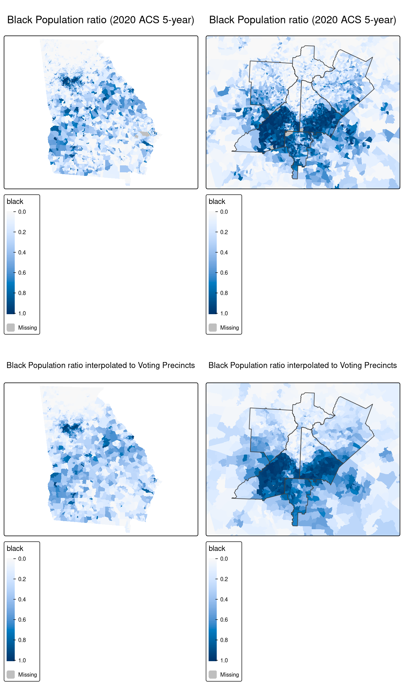
A categorical variable is added to describe the population density of the precinct. A density of greater than 1500 persons/km^2 is classified as “high”, between 200 and 1500 is “medium” and less than 200 is “low”. This categorical variable is intended to measure the urban or rural characteristic of the precinct. The “high” density precincts are roughly those in urban areas, mainly in the metropolitan Atlanta region, but also in Savannah, Augusta, and Athens. The majority of the land area of the state is the low-density rural areas. The intermediate density areas are intended to cover the suburban areas - primarily in the metropolitan Atlanta region - but this category also includes many of the smaller cities located throughout the state as well.
precinctsInterpolated = precinctsInterpolated %>% mutate(
densityCategory = factor(ifelse(density>1500,"high",ifelse(density>200,"medium","low")))
)
map_highden = tm_shape(precinctsInterpolated) + tm_fill(fill ="densityCategory") + tm_title("Density Classification of Voting Precincts")
map_highden_Atl = tm_shape(precinctsInterpolated,bbox=metroATL_bb) + tm_fill(fill ="densityCategory")+ tm_shape(metroATL) + tm_borders()+ tm_title("Density Classification (Metro Atlanta)")
tmap_arrange(map_highden,map_highden_Atl)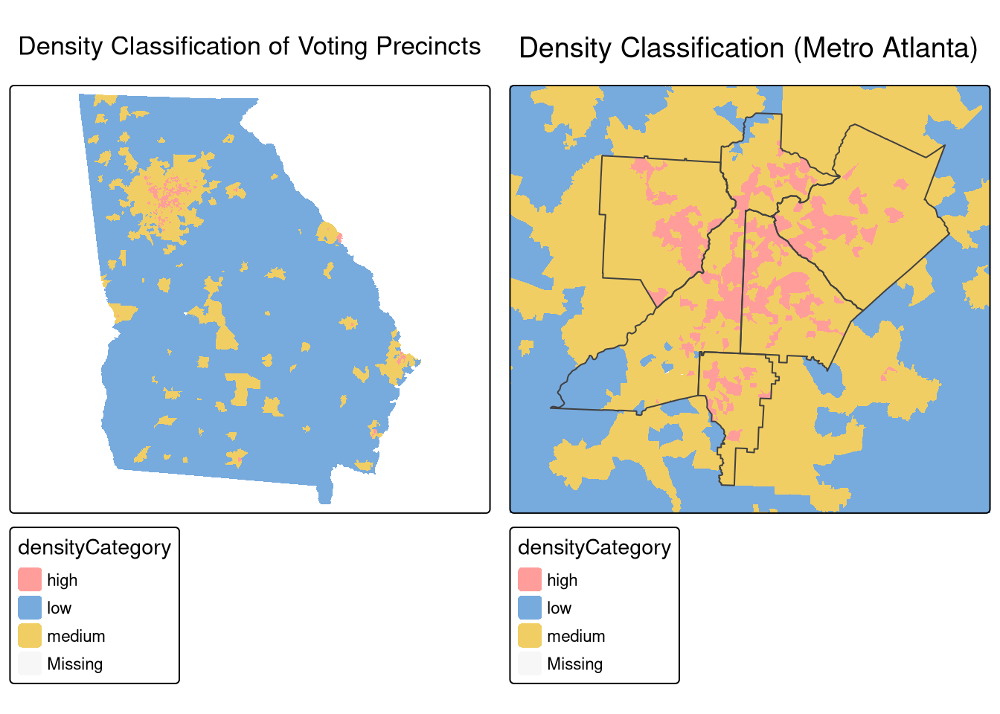
precinctsInterpolated_rmNA = precinctsInterpolated %>% na.omit()Maps are now shown of all six demographic variables that are covered in this report:
mapBlackRatioInter = tm_shape(precinctsInterpolated) + tm_fill(fill="black", fill.scale=tm_scale_continuous())+ tm_layout(legend.position = c("right","top")) +tm_title("Black Population Ratio")
mapBlackRatioInterAtl = tm_shape(precinctsInterpolated,bbox=metroATL_bb) + tm_fill(fill="black", fill.scale=tm_scale_continuous()) + tm_shape(metroATL) + tm_borders()+tm_legend_hide() +tm_title("Black Population Ratio (Metro Atlanta)")
map_Hispanic = tm_shape(precinctsInterpolated) + tm_fill(fill="hispanic", fill.scale=tm_scale_continuous())+ tm_layout(legend.position = c("right","top")) +tm_title("Hispanic Population Ratio")
map_Hispanic_Atl = tm_shape(precinctsInterpolated,bbox=metroATL_bb) + tm_fill(fill="hispanic", fill.scale=tm_scale_continuous()) + tm_shape(metroATL) + tm_borders()+tm_legend_hide() +tm_title("Hispanic Population Ratio (Metro Atlanta)")
tmap_arrange(mapBlackRatioInter, mapBlackRatioInterAtl, map_Hispanic, map_Hispanic_Atl, nrow=2)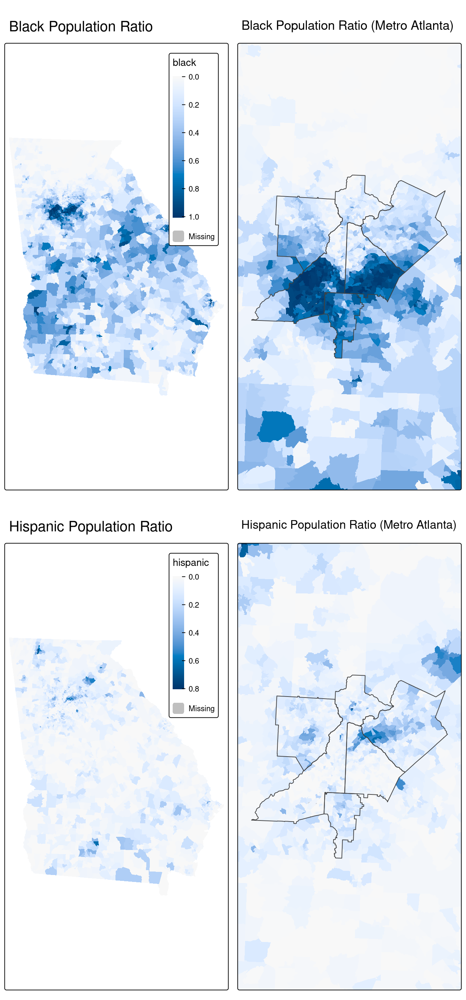
map_bachelors = tm_shape(precinctsInterpolated) + tm_fill(fill="bachelors", fill.scale=tm_scale_continuous())+ tm_layout(legend.position = c("right","top")) +tm_title("Bachelors Degree Ratio")
map_bachelors_Atl = tm_shape(precinctsInterpolated,bbox=metroATL_bb) + tm_fill(fill="bachelors", fill.scale=tm_scale_continuous()) + tm_shape(metroATL) + tm_borders()+tm_legend_hide() +tm_title("Bachelors Degree Ratio (Metro Atlanta)")
map_grad = tm_shape(precinctsInterpolated) + tm_fill(fill="grad", fill.scale=tm_scale_continuous()) + tm_layout(legend.position = c("right","top")) +tm_title("Graduate Degree Ratio")
map_grad_Atl = tm_shape(precinctsInterpolated,bbox=metroATL_bb) + tm_fill(fill="grad", fill.scale=tm_scale_continuous()) + tm_shape(metroATL)+tm_legend_hide() + tm_borders() +tm_title("Graduate Degree Ratio (Metro Atlanta)")
tmap_arrange(map_bachelors,map_bachelors_Atl, map_grad, map_grad_Atl, nrow=2)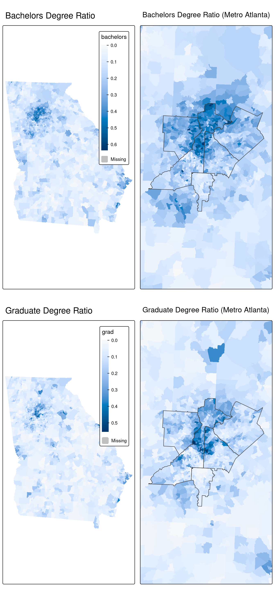
map_poverty = tm_shape(precinctsInterpolated) + tm_fill(fill="poverty", fill.scale=tm_scale_continuous()) + tm_layout(legend.position = c("right","top")) + tm_title("Poverty Ratio")
map_poverty_Atl = tm_shape(precinctsInterpolated,bbox=metroATL_bb) + tm_fill(fill="poverty", fill.scale=tm_scale_continuous()) + tm_shape(metroATL)+tm_legend_hide() + tm_borders() +tm_title("Poverty Ratio (Metro Atlanta)")
map_income = tm_shape(precinctsInterpolated) + tm_fill(fill="medIncome", fill.scale=tm_scale_continuous()) + tm_layout(legend.position = c("right","top")) + tm_title("Median Income")
map_income_Atl = tm_shape(precinctsInterpolated,bbox=metroATL_bb) + tm_fill(fill="medIncome", fill.scale=tm_scale_continuous()) + tm_shape(metroATL) + tm_borders()+tm_legend_hide() +tm_title("Median Income (Metro Atlanta)")
tmap_arrange(map_poverty, map_poverty_Atl, map_income, map_income_Atl, nrow=2)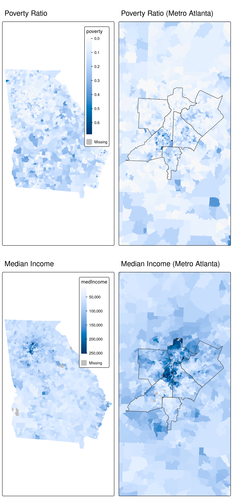
Some observations about the spatial distribution of these six variables:
The black population ratio is highest in southern parts of metro Atlanta, though it is not very high in the northern part of metro Atlanta. The northernmost part of the state has a very low black population ratio. There is a large belt going East to West through the middle part of the state that has a high black population; this horizontal belt and density in Atlanta visually matches very closely with the above partisan voting map, where the black areas correspond to the democratic-voting areas. It is not an exact match, though because the northern part of Metro Atlanta has a low black population ratio but voted highly democratic.
The Hispanic population ratio is mostly low throughout the state but there are a few clusters where there is a high ratio (including part of the Atlanta metro).
The two education variables are highest in the Atlanta Metro, but low throughout the rest of the state. The pattern in the Atlanta Metro is reversed from the black population ratio - the northern parts of the metro area (Buckhead and Sandy Springs) have a higher education, while the southern areas of the metro area have lower education levels. Higher education levels are also visible at locations of universities visible throughout the state. For example, there are multiple universities in downtown Atlanta including Georgia Tech, Georgia State, and Emory. The University of Georgia is visible in Athens, GA, about 70 miles east of Atlanta.
While there are some small areas in the Atlanta Metro with high poverty and low income, overall the Atlanta Metro has low poverty and high income while the rest of the state has higher poverty and lower income. The northern parts of Atlanta Metro area (Buckhead and Sandy Springs) has the highest income in the whole state, corresponding to the areas in the metro area with high education. The southern half of the state appears to have the most poverty
Moran’s I of response variable
A Moran’s I test is run on the response variable (ratio of Democratic Votes). The hypothesis test shows strong evidence of spatial distribution of the response variable.
nb = poly2nb(precinctsInterpolated_rmNA)
ww = nb2listw(nb, style="W", zero.policy = TRUE)
moran.test(precinctsInterpolated_rmNA$demRatio, ww, alternative = "greater")
Moran I test under randomisation
data: precinctsInterpolated_rmNA$demRatio
weights: ww
Moran I statistic standard deviate = 70.945, p-value < 2.2e-16
alternative hypothesis: greater
sample estimates:
Moran I statistic Expectation Variance
0.8228334639 -0.0003831418 0.0001346434 The Local Moran’s I of the precincts is plotted below. There is evidence of geographic pattern throughout the state.
local_I = localmoran(precinctsInterpolated_rmNA$demRatio, ww, alternative = "greater")
precinctsInterpolated_rmNA$Local_I = local_I[, "Ii"]
precinctsInterpolated_rmNA$Local_I_p = local_I[, "Pr(z > E(Ii))"]
map_Moran_1 = tm_shape(precinctsInterpolated_rmNA) + tm_fill(fill="Local_I", fill.scale=tm_scale_continuous()) +tm_title("Local I of response variable")
map_Moran_1_Atl = tm_shape(precinctsInterpolated_rmNA, bbox=metroATL_bb) + tm_fill(fill="Local_I", fill.scale=tm_scale_continuous()) + tm_shape(metroATL) + tm_borders() +tm_title("Local I of response variable (Metro Atlanta Area)")
tmap_arrange(map_Moran_1,map_Moran_1_Atl)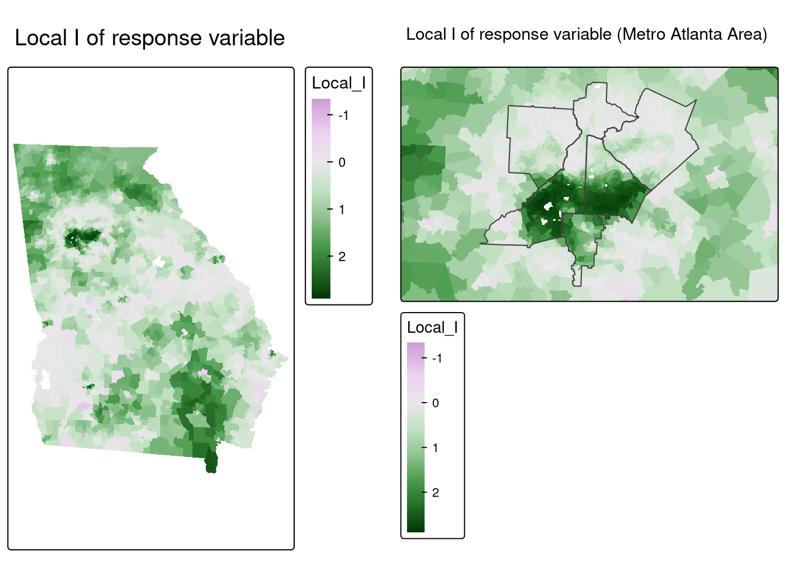
High-High and Low-Low Clusters
The significant clusters found are mapped below. There appears to be a large Democratic-leaning cluster in the Metro Atlanta Area and numerous smaller ones throughout the state in the smaller cities (Athens, Savannah, Macon, Columbus, etc). The northern part of the state and the southern part of the state form two large Republican voting clusters. Notably, the Moran’s I is not significant in the ring of suburbs surrounding Atlanta nor in the horizontal belt with a high black population.
z = scale(precinctsInterpolated_rmNA$demRatio, center = TRUE, scale = TRUE)[,1]
lag_z = lag.listw(ww, z)
precinctsInterpolated_rmNA <- precinctsInterpolated_rmNA %>%
mutate(
LISA_type = case_when(
z > 0 & lag_z > 0 ~ "High-High",
z < 0 & lag_z < 0 ~ "Low-Low",
z > 0 & lag_z < 0 ~ "High-Low",
z < 0 & lag_z > 0 ~ "Low-High"
)
)
precinctsInterpolated_rmNA$LISA_type = ifelse(precinctsInterpolated_rmNA$Local_I_p <= 0.05, precinctsInterpolated_rmNA$LISA_type, "Not significant")
map_Lisa1 = tm_shape(precinctsInterpolated_rmNA) +
tm_fill(
"LISA_type",
palette = c("High-High"="#377EB8", "Low-Low"="#E41A1C",
#"High-Low"="#4DAF4A", "Low-High"="#984EA3",
"Not significant"="gray"),
title = "LISA cluster type"
) + tm_title("LISA cluster type")
map_Lisa1_Atl = tm_shape(precinctsInterpolated_rmNA,bbox=metroATL_bb) +
tm_fill(
"LISA_type",
palette = c("High-High"="#377EB8", "Low-Low"="#E41A1C",
#"High-Low"="#4DAF4A", "Low-High"="#984EA3",
"Not significant"="gray"),
title = "LISA cluster type"
)+ tm_shape(metroATL) + tm_borders() + tm_title("LISA cluster type (Metro Atlanta Area)")
tmap_arrange(map_Lisa1,map_Lisa1_Atl)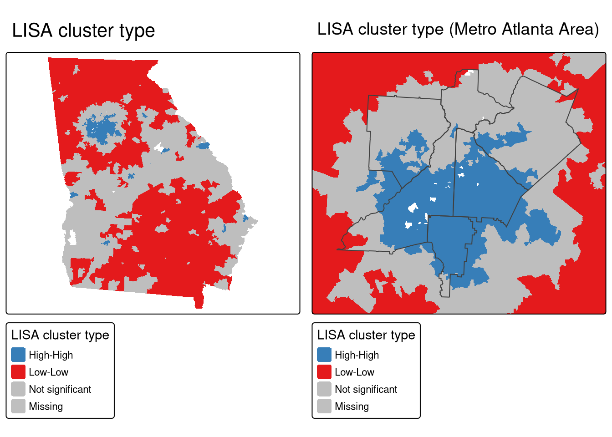
GAM Model
A GAM model is fit with the six demographic predictor variables used above. The categorical density variable is used as an interaction term. The summary of the model is provided as well as the output of the cam.check() function for evaluating the model fit.
gam4 = gam(demRatio ~ s(poverty,by=densityCategory) + s(bachelors,by=densityCategory) + s(hispanic,by=densityCategory) + s(grad,by=densityCategory) + s(medIncome,by=densityCategory) + s(black,by=densityCategory), data=precinctsInterpolated_rmNA,family="quasibinomial",method = "REML")
summary(gam4)
Family: quasibinomial
Link function: logit
Formula:
demRatio ~ s(poverty, by = densityCategory) + s(bachelors, by = densityCategory) +
s(hispanic, by = densityCategory) + s(grad, by = densityCategory) +
s(medIncome, by = densityCategory) + s(black, by = densityCategory)
Parametric coefficients:
Estimate Std. Error t value Pr(>|t|)
(Intercept) 0.2358 0.0158 14.92 <2e-16 ***
---
Signif. codes: 0 '***' 0.001 '**' 0.01 '*' 0.05 '.' 0.1 ' ' 1
Approximate significance of smooth terms:
edf Ref.df F p-value
s(poverty):densityCategoryhigh 1.001 1.001 1.405 0.23605
s(poverty):densityCategorylow 3.383 4.241 4.266 0.00151 **
s(poverty):densityCategorymedium 3.119 3.921 1.842 0.12413
s(bachelors):densityCategoryhigh 3.262 4.104 16.020 < 2e-16 ***
s(bachelors):densityCategorylow 1.036 1.071 46.087 < 2e-16 ***
s(bachelors):densityCategorymedium 1.168 1.315 120.010 < 2e-16 ***
s(hispanic):densityCategoryhigh 2.374 3.021 74.901 < 2e-16 ***
s(hispanic):densityCategorylow 1.000 1.000 64.143 < 2e-16 ***
s(hispanic):densityCategorymedium 1.002 1.003 278.463 < 2e-16 ***
s(grad):densityCategoryhigh 2.595 3.301 48.054 < 2e-16 ***
s(grad):densityCategorylow 8.910 8.994 34.260 < 2e-16 ***
s(grad):densityCategorymedium 4.523 5.620 39.188 < 2e-16 ***
s(medIncome):densityCategoryhigh 3.085 3.919 1.621 0.16676
s(medIncome):densityCategorylow 1.003 1.006 0.634 0.42750
s(medIncome):densityCategorymedium 4.165 5.192 5.720 3.02e-05 ***
s(black):densityCategoryhigh 1.001 1.002 842.509 < 2e-16 ***
s(black):densityCategorylow 7.055 8.021 273.864 < 2e-16 ***
s(black):densityCategorymedium 4.633 5.679 598.310 < 2e-16 ***
---
Signif. codes: 0 '***' 0.001 '**' 0.01 '*' 0.05 '.' 0.1 ' ' 1
R-sq.(adj) = 0.897 Deviance explained = 88.7%
-REML = -2790.8 Scale est. = 0.039235 n = 2611gam.check(gam4)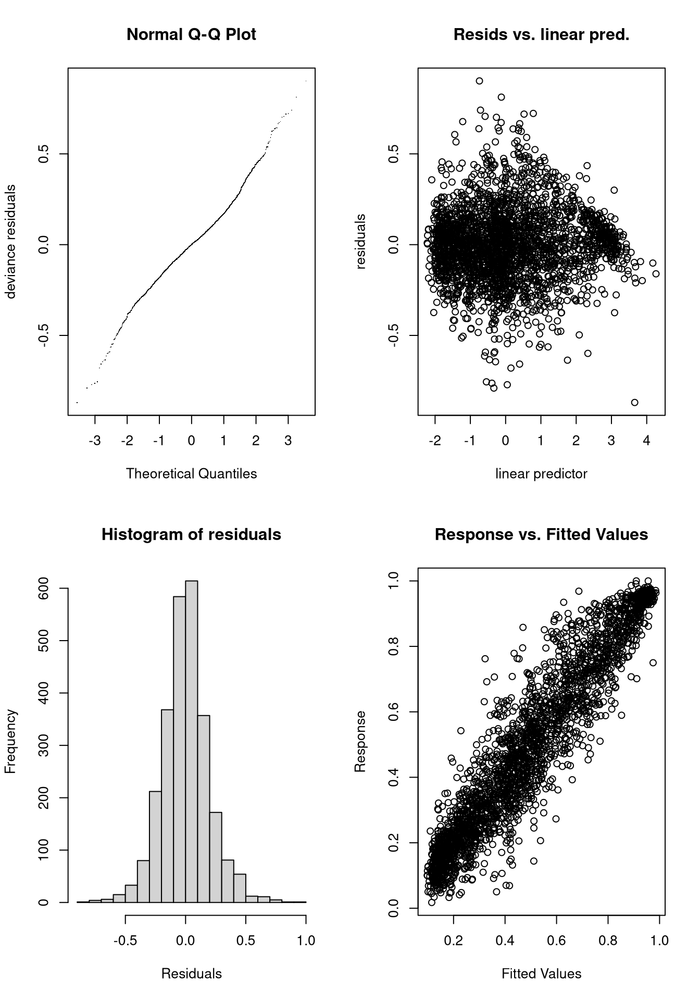
Method: REML Optimizer: outer newton
full convergence after 12 iterations.
Gradient range [-0.0008025089,0.007347097]
(score -2790.772 & scale 0.03923475).
Hessian positive definite, eigenvalue range [5.002284e-05,1296.023].
Model rank = 163 / 163
Basis dimension (k) checking results. Low p-value (k-index<1) may
indicate that k is too low, especially if edf is close to k'.
k' edf k-index p-value
s(poverty):densityCategoryhigh 9.00 1.00 1.03 0.94
s(poverty):densityCategorylow 9.00 3.38 1.03 0.91
s(poverty):densityCategorymedium 9.00 3.12 1.03 0.91
s(bachelors):densityCategoryhigh 9.00 3.26 0.99 0.21
s(bachelors):densityCategorylow 9.00 1.04 0.99 0.24
s(bachelors):densityCategorymedium 9.00 1.17 0.99 0.28
s(hispanic):densityCategoryhigh 9.00 2.37 1.01 0.67
s(hispanic):densityCategorylow 9.00 1.00 1.01 0.72
s(hispanic):densityCategorymedium 9.00 1.00 1.01 0.69
s(grad):densityCategoryhigh 9.00 2.60 1.02 0.83
s(grad):densityCategorylow 9.00 8.91 1.02 0.82
s(grad):densityCategorymedium 9.00 4.52 1.02 0.77
s(medIncome):densityCategoryhigh 9.00 3.08 0.99 0.30
s(medIncome):densityCategorylow 9.00 1.00 0.99 0.27
s(medIncome):densityCategorymedium 9.00 4.16 0.99 0.29
s(black):densityCategoryhigh 9.00 1.00 0.99 0.31
s(black):densityCategorylow 9.00 7.05 0.99 0.30
s(black):densityCategorymedium 9.00 4.63 0.99 0.34Marginal effect plots are provided for the six variables below.
(plot_predictions(gam4, condition=c("black","densityCategory"),points=0.1) + labs(title="Marginal Effect of Black Population Ratio") | plot_predictions(gam4, condition=c("hispanic","densityCategory"),points=0.1) + labs(title="Marginal Effect of Hispanic Population Ratio"))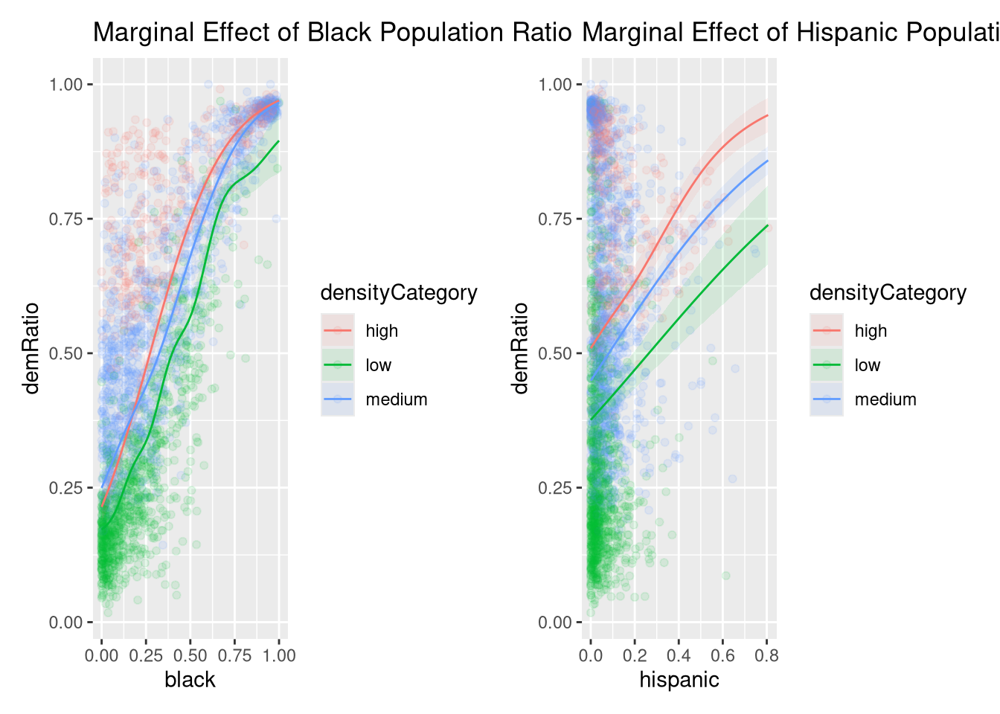
All plots show the general trend that the densest areas trend Democratic, the least dense areas trend Republican, and the intermediate areas vote similarly intermediate. The black and Hispanic population ratio show a clear positive correlation with the democratic vote ratio across all three density groups and across all densities, a high black or hispanic population ratio is correlated with a higher democratic voting share. The relationship is not entirely linear, with a plateau occurring at the highest black population ratios.
(plot_predictions(gam4, condition=c("bachelors","densityCategory"),points=0.1) + labs(title="Marginal Effect of Bachelors Degree Ratio") | plot_predictions(gam4, condition=c("grad","densityCategory"),points=0.1)+ labs(title="Marginal Effect of Graduate Degree Ratio"))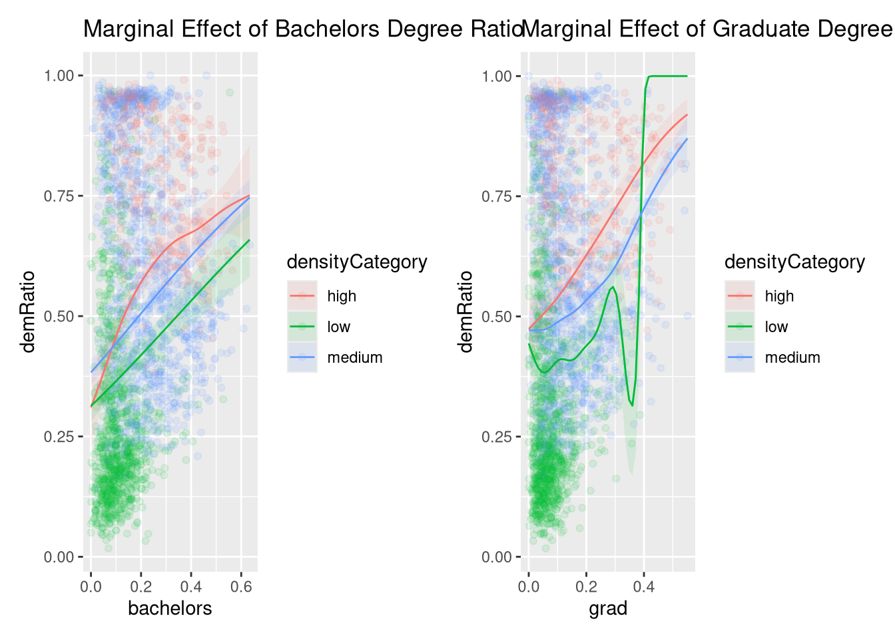
Likewise, the two education variables appear to have a positive correlation across all groups, though the graduate degree variable appears to not fit well to the low density category, especially for high graduate degree ratios, likely because of the small number of rural precincts with a high ratio of graduate degree-holders. The relationships here show some non-linear relations, with a slight U shape visible in some of the density of categories.
(plot_predictions(gam4, condition=c("poverty","densityCategory"),points=0.1) + labs(title="Marginal Effect of Poverty Ratio") | plot_predictions(gam4, condition=c("medIncome","densityCategory"),points=0.1) + labs(title="Marginal Effect of Median Income"))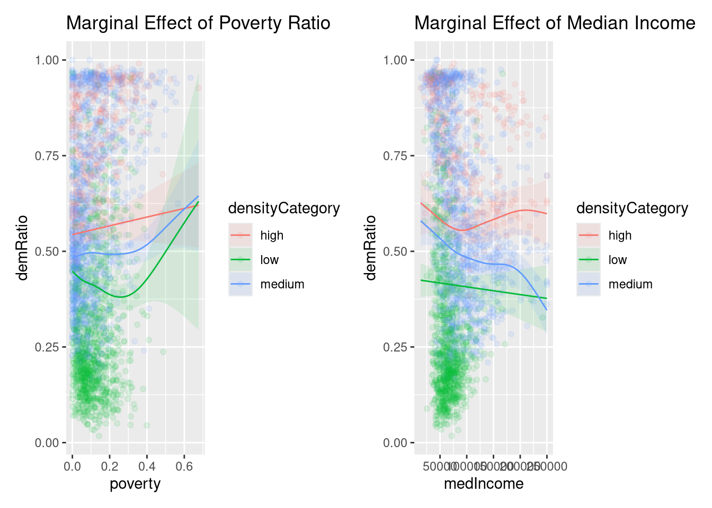
The two income-related variables do not show a decisive conclusion. These did not all achieve significance when fitting the model and the relation is not clear. These relationships appear to be non-linear with some U-shaped correlations apparent. For example, in the low-density group increasing poverty appears to be correlate with more Republican votes at the lower ratios, though at higher ratios, the relationship reverses, though there is a high amount of error in this trend at higher ratios. By contrast, at the higher density categories, there is a more constant upward trend. The effects of median income also differ by density group. At the low densities, a very slight downward trend in democratic voting ratio is apparent with increasing income; however, this trend was not found to achieve significance. The medium density shows a downward trend in democratic voting ratio with increasing income, while the high density category shows a wavy pattern: first decreasing, then increasing, finally slightly decreasing again, but overall not showing dramatic changes.
Model Residuals
The residuals of the GAM model are plotted below. The residuals are not extreme except for one outlier precinct.
precinctsInterpolated_rmNA$resids2 = gam4$residuals
map_Resids2 = tm_shape(precinctsInterpolated_rmNA) + tm_fill(fill="resids2", fill.scale=tm_scale_continuous(midpoint=0,values=c("red","white","blue")))+tm_title("residual values of linear model")
map_Resids2_Atl = tm_shape(precinctsInterpolated_rmNA, bbox = metroATL_bb) + tm_fill(fill="resids2", fill.scale=tm_scale_continuous(midpoint=0,values=c("red","white","blue")))+ tm_shape(metroATL) + tm_borders() +tm_title("residual values of linear model (Metropolitan Atlanta")
tmap_arrange(map_Resids2,map_Resids2_Atl)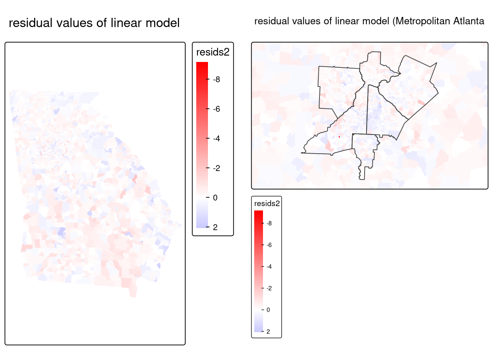
A Moran’s I test is run on the residuals. The hypothesis test indicates that the residuals show spatial distribution at a very small p-value.
moran.test(resid(gam4), ww)
Moran I test under randomisation
data: resid(gam4)
weights: ww
Moran I statistic standard deviate = 18.284, p-value < 2.2e-16
alternative hypothesis: greater
sample estimates:
Moran I statistic Expectation Variance
0.2116707355 -0.0003831418 0.0001345076 A Local Moran’s I is run on the residuals. The residuals do not show as clear a spatial distribution as the response variable, but there are still areas that have a clear spatial correlation, such as the downtown area of Atlanta and the southern portion of the state.
local_I2 = localmoran(resid(gam4), ww, alternative="two.sided")
precinctsInterpolated_rmNA$Local_I2 = local_I2[, "Ii"]
precinctsInterpolated_rmNA$Local_I_p2 = local_I2[, "Pr(z != E(Ii))"]
map_Morans3 = tm_shape(precinctsInterpolated_rmNA) + tm_fill(fill="Local_I2", fill.scale=tm_scale_continuous())+tm_title("Local Moran's I")
map_Morans3_Atl = tm_shape(precinctsInterpolated_rmNA, bbox=metroATL_bb) + tm_fill(fill="Local_I2", fill.scale=tm_scale_continuous())+ tm_shape(metroATL) + tm_borders() +tm_title("Local Moran's I (Metropolitan Atlanta)")
tmap_arrange(map_Morans3, map_Morans3_Atl)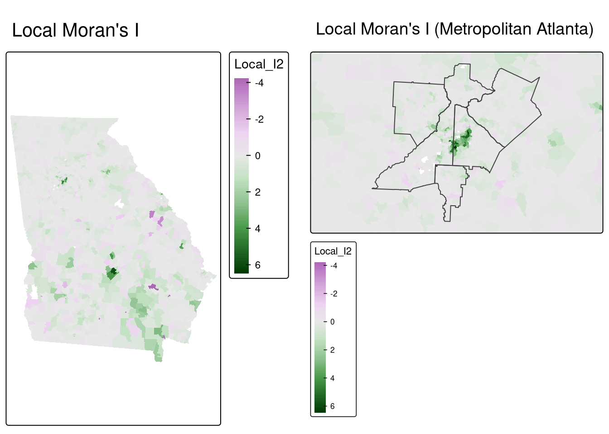
When mapping the clusters of the residuals, the general trend is similar to the clustering of the response variable itself, with Downtown Atlanta trending Democratic and Southern Georgia trending Republican. Clearly the model failed to capture all of the variance of the response variable.
z2 = scale(precinctsInterpolated_rmNA$resids2, center = TRUE, scale = TRUE)[,1]
lag_z2 = lag.listw(ww, z2)
precinctsInterpolated_rmNA <- precinctsInterpolated_rmNA %>%
mutate(
LISA_type2 = case_when(
z2 > 0 & lag_z2 > 0 ~ "High-High",
z2 < 0 & lag_z2 < 0 ~ "Low-Low",
z2 > 0 & lag_z2 < 0 ~ "High-Low",
z2 < 0 & lag_z2 > 0 ~ "Low-High"
)
)
precinctsInterpolated_rmNA$LISA_type2 = ifelse(precinctsInterpolated_rmNA$Local_I_p2 <= 0.05, precinctsInterpolated_rmNA$LISA_type2, "Not significant")
map_Lisa2 = tm_shape(precinctsInterpolated_rmNA) +
tm_fill(
"LISA_type2",
palette = c("High-High"="#377EB8", "Low-Low"="#E41A1C",
"High-Low"="#4DAF4A", "Low-High"="#984EA3",
"Not significant"="gray"),
title = "LISA cluster type"
)
map_Lisa2_Atl = tm_shape(precinctsInterpolated_rmNA, bbox=metroATL_bb) +
tm_fill(
"LISA_type2",
palette = c("High-High"="#377EB8", "Low-Low"="#E41A1C",
"High-Low"="#4DAF4A", "Low-High"="#984EA3",
"Not significant"="gray"),
title = "LISA cluster type"
)+ tm_shape(metroATL) + tm_borders()
tmap_arrange(map_Lisa2, map_Lisa2_Atl)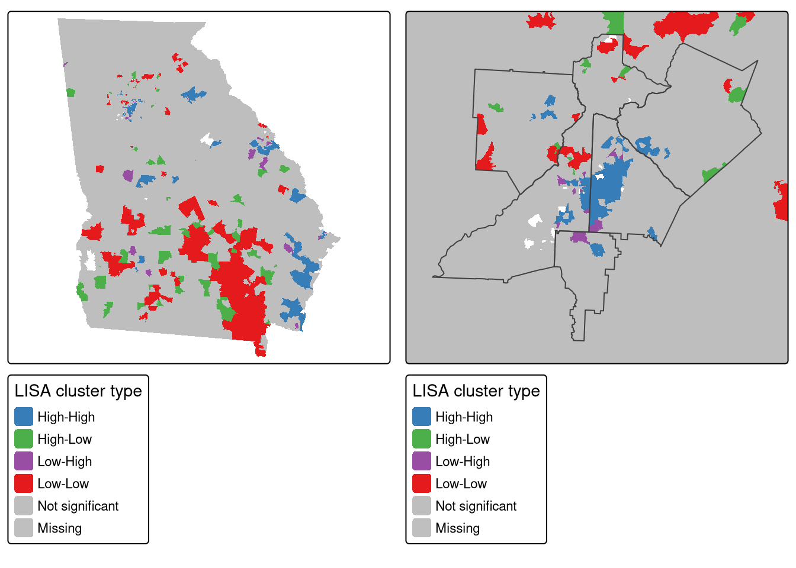
SAR and CAR Models
Below, an SAR and CAR model are used to fit the dataset. While both models visually appear to fit the data well, it is not a perfect fit. (e.g., the maximum predicted ratio is over 1.)
SAR_error = spautolm(demRatio ~ density + poverty + bachelors + grad + black + hispanic,
data=precinctsInterpolated_rmNA,
listw = ww,
family = "SAR")
summary(SAR_error)
Call: spautolm(formula = demRatio ~ density + poverty + bachelors +
grad + black + hispanic, data = precinctsInterpolated_rmNA,
listw = ww, family = "SAR")
Residuals:
Min 1Q Median 3Q Max
-0.3945920 -0.0437380 -0.0045629 0.0415677 0.4256343
Coefficients:
Estimate Std. Error z value Pr(>|z|)
(Intercept) 1.7478e-01 1.1888e-02 14.7021 < 2.2e-16
density 1.4231e-05 2.7859e-06 5.1084 3.249e-07
poverty 5.8719e-02 2.2393e-02 2.6222 0.008737
bachelors 2.0710e-01 2.7045e-02 7.6578 1.887e-14
grad 2.2851e-01 3.1167e-02 7.3319 2.269e-13
black 6.8909e-01 1.2847e-02 53.6382 < 2.2e-16
hispanic 4.0029e-01 2.6630e-02 15.0315 < 2.2e-16
Lambda: 0.79629 LR test value: 632.05 p-value: < 2.22e-16
Numerical Hessian standard error of lambda: 0.016841
Log likelihood: 2633.044
ML residual variance (sigma squared): 0.0066787, (sigma: 0.081723)
Number of observations: 2611
Number of parameters estimated: 9
AIC: -5248.1moran.test(resid(SAR_error), ww)
Moran I test under randomisation
data: resid(SAR_error)
weights: ww
Moran I statistic standard deviate = -7.7839, p-value = 1
alternative hypothesis: greater
sample estimates:
Moran I statistic Expectation Variance
-0.0906354388 -0.0003831418 0.0001344371 precinctsInterpolated_rmNA$SAR_trend_fit = SAR_error$fit$signal_trend
precinctsInterpolated_rmNA$SAR_stochastic_fit = SAR_error$fit$signal_trend + SAR_error$fit$signal_stochastic
map_SAR = tm_shape(precinctsInterpolated_rmNA) + tm_fill(
fill=c("SAR_trend_fit","SAR_stochastic_fit"), fill.scale=tm_scale_continuous(midpoint=0.5,values=c("red","white","blue"))
) + tm_facets(free.scales = FALSE) + tm_layout(legend.position = c("right","top")) + tm_title("SAR Model")
map_SAR_Atl = tm_shape(precinctsInterpolated_rmNA, bbox=metroATL_bb) + tm_fill(
fill=c("SAR_trend_fit","SAR_stochastic_fit"), fill.scale=tm_scale_continuous(midpoint=0.5,values=c("red","white","blue"))
) + tm_facets(free.scales = FALSE)+ tm_shape(metroATL) + tm_borders() + tm_title("SAR Model (Metro Atlanta)")
tmap_arrange(map_SAR,map_SAR_Atl)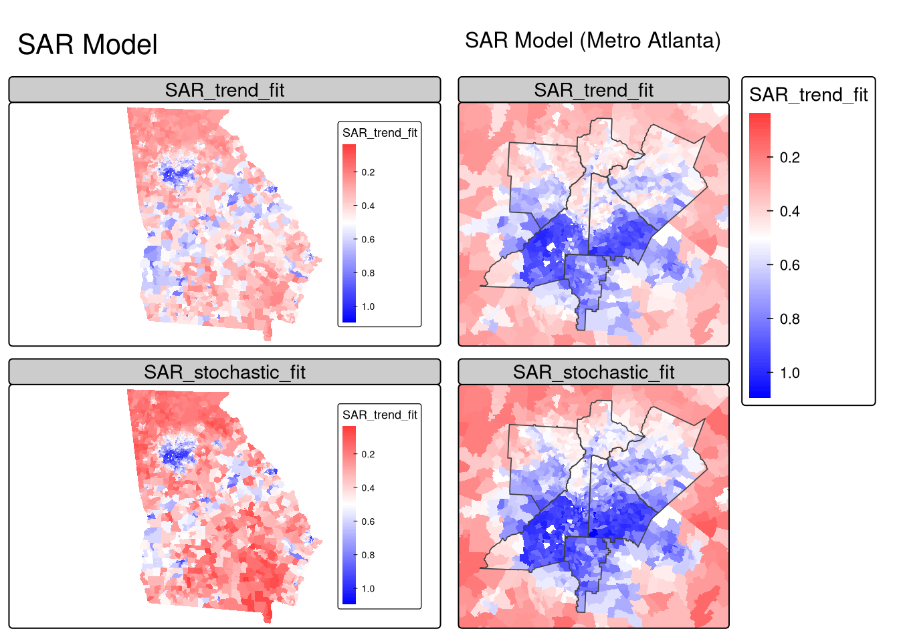
CAR = spautolm(demRatio ~density + poverty + bachelors + grad + black + hispanic,
data=precinctsInterpolated_rmNA,
listw = ww,
family = "CAR")
summary(CAR)
Call: spautolm(formula = demRatio ~ density + poverty + bachelors +
grad + black + hispanic, data = precinctsInterpolated_rmNA,
listw = ww, family = "CAR")
Residuals:
Min 1Q Median 3Q Max
-0.3874141 -0.0447034 -0.0043321 0.0383867 0.4670566
Coefficients:
Estimate Std. Error z value Pr(>|z|)
(Intercept) 2.8038e-01 1.2014e-02 23.3379 < 2.2e-16
density -5.9744e-06 2.7891e-06 -2.1420 0.03219
poverty 1.4599e-01 2.3032e-02 6.3384 2.321e-10
bachelors 1.4337e-01 2.7724e-02 5.1713 2.324e-07
grad 3.2585e-01 3.1863e-02 10.2267 < 2.2e-16
black 6.3803e-01 1.2691e-02 50.2737 < 2.2e-16
hispanic 3.6109e-01 2.6543e-02 13.6042 < 2.2e-16
Lambda: 0.95869 LR test value: 664.61 p-value: < 2.22e-16
Numerical Hessian standard error of lambda: NaN
Log likelihood: 2649.322
ML residual variance (sigma squared): 0.006678, (sigma: 0.081719)
Number of observations: 2611
Number of parameters estimated: 9
AIC: -5280.6moran.test(resid(CAR), ww)
Moran I test under randomisation
data: resid(CAR)
weights: ww
Moran I statistic standard deviate = -16.722, p-value = 1
alternative hypothesis: greater
sample estimates:
Moran I statistic Expectation Variance
-0.1942324090 -0.0003831418 0.0001343913 precinctsInterpolated_rmNA$CAR_trend_fit = CAR$fit$signal_trend
precinctsInterpolated_rmNA$CAR_stochastic_fit = CAR$fit$signal_trend + CAR$fit$signal_stochastic
map_CAR =tm_shape(precinctsInterpolated_rmNA) + tm_fill(
fill=c("CAR_trend_fit","CAR_stochastic_fit"), fill.scale=tm_scale_continuous(midpoint=0.5,values=c("red","white","blue"))
) + tm_layout(legend.position = c("right","top"))+ tm_facets(free.scales = FALSE) + tm_title("CAR Model")
map_CAR_Atl = tm_shape(precinctsInterpolated_rmNA, bbox=metroATL_bb) + tm_fill(
fill=c("CAR_trend_fit","CAR_stochastic_fit"), fill.scale=tm_scale_continuous(midpoint=0.5,values=c("red","white","blue"))
) + tm_facets(free.scales = FALSE) + tm_shape(metroATL) + tm_borders() + tm_title("CAR Model (Metro Atlanta)")
tmap_arrange(map_CAR,map_CAR_Atl)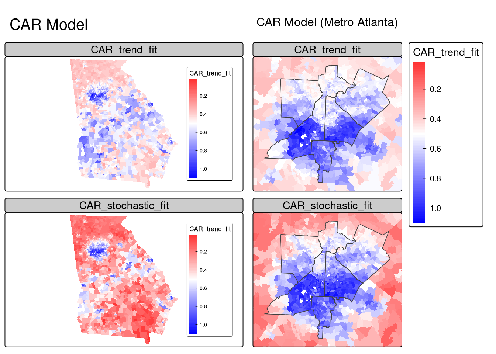
Both models achieved approximately equal AIC and log-likelihood.
Geographic Weighted Regression
For the geographic weighted regression, the predicted variable is pct_dem_lead. This is the percentage difference in overall votes between Democratic and Republican votes, where 100 would be all democratic votes, -100 would be all republican votes, and 0 would be an even split. This is done so that the regression coefficients will be positive if correlated with Democratic votes and negative if correlated with Republican votes.
bw <- bw.gwr(pct_dem_lead ~ medIncome+ poverty + bachelors + grad + black + hispanic,
data=precinctsInterpolated_rmNA,
approach = "CV",
kernel = "gaussian",
adaptive = TRUE)gwr_mod = gwr.basic(pct_dem_lead ~ medIncome+ poverty + bachelors + grad + black + hispanic,
data=precinctsInterpolated_rmNA,
bw = bw,
kernel = "gaussian",
adaptive = TRUE)
print(gwr_mod) ***********************************************************************
* Package GWmodel *
***********************************************************************
Program starts at: 2026-11-09 16:24:53.379282
Call:
gwr.basic(formula = pct_dem_lead ~ medIncome + poverty + bachelors +
grad + black + hispanic, data = precinctsInterpolated_rmNA,
bw = bw, kernel = "gaussian", adaptive = TRUE)
Dependent (y) variable: pct_dem_lead
Independent variables: medIncome poverty bachelors grad black hispanic
Number of data points: 2611
***********************************************************************
* Results of Global Regression *
***********************************************************************
Call:
lm(formula = formula, data = data)
Residuals:
Min 1Q Median 3Q Max
-86.56 -12.72 0.00 11.47 79.58
Coefficients:
Estimate Std. Error t value Pr(>|t|)
(Intercept) -1.077e+02 1.702e+00 -63.248 < 2e-16 ***
medIncome -1.284e-05 2.079e-05 -0.618 0.537
poverty 3.015e+01 5.262e+00 5.730 1.12e-08 ***
bachelors 1.179e+02 5.981e+00 19.713 < 2e-16 ***
grad 1.428e+02 7.039e+00 20.285 < 2e-16 ***
black 1.739e+02 1.695e+00 102.593 < 2e-16 ***
hispanic 1.397e+02 4.559e+00 30.635 < 2e-16 ***
---Significance stars
Signif. codes: 0 '***' 0.001 '**' 0.01 '*' 0.05 '.' 0.1 ' ' 1
Residual standard error: 21.17 on 2604 degrees of freedom
Multiple R-squared: 0.8503
Adjusted R-squared: 0.85
F-statistic: 2466 on 6 and 2604 DF, p-value: < 2.2e-16
***Extra Diagnostic information
Residual sum of squares: 1167561
Sigma(hat): 21.15449
AIC: 23360.47
AICc: 23360.52
BIC: 20859.35
***********************************************************************
* Results of Geographically Weighted Regression *
***********************************************************************
*********************Model calibration information*********************
Kernel function: gaussian
Adaptive bandwidth: 20 (number of nearest neighbours)
Regression points: the same locations as observations are used.
Distance metric: Euclidean distance metric is used.
****************Summary of GWR coefficient estimates:******************
Min. 1st Qu. Median 3rd Qu. Max.
Intercept -1.3701e+02 -9.8723e+01 -7.4993e+01 -3.3697e+01 86.6736
medIncome -4.7826e-04 -1.4176e-04 -6.5664e-05 3.8125e-06 0.0005
poverty -1.0450e+02 -3.1097e+00 1.6449e+01 4.0173e+01 178.4883
bachelors -7.3821e+01 2.1217e+01 6.7787e+01 1.0190e+02 237.5698
grad -1.2814e+02 1.4278e+01 5.5183e+01 8.7552e+01 244.0721
black 1.2359e+01 1.1323e+02 1.5710e+02 1.7905e+02 281.6678
hispanic -4.6416e+01 5.3350e+01 8.8868e+01 1.2099e+02 233.5381
************************Diagnostic information*************************
Number of data points: 2611
Effective number of parameters (2trace(S) - trace(S'S)): 522.2479
Effective degrees of freedom (n-2trace(S) + trace(S'S)): 2088.752
AICc (GWR book, Fotheringham, et al. 2002, p. 61, eq 2.33): 21868.31
AIC (GWR book, Fotheringham, et al. 2002,GWR p. 96, eq. 4.22): 21363.76
BIC (GWR book, Fotheringham, et al. 2002,GWR p. 61, eq. 2.34): 21330.65
Residual sum of squares: 473570.8
R-square value: 0.9392999
Adjusted R-square value: 0.9241159
***********************************************************************
Program stops at: 2026-11-09 16:24:55.249721 map_GWRblack = tm_shape(gwr_mod$SDF) + tm_fill(fill="black",fill.scale=tm_scale_continuous(midpoint=0,values=c("red","white","blue"))) + tm_title("Black Population Ratio GWR Coefficients")
map_GWRblack_Atl = tm_shape(gwr_mod$SDF,bbox=metroATL_bb) + tm_fill(fill="black",fill.scale=tm_scale_continuous(midpoint=0,values=c("red","white","blue")))+ tm_shape(metroATL) + tm_borders() + tm_title("Black Population Ratio GWR Coefficients (Metro Atlanta)")
map_GWRhisp = tm_shape(gwr_mod$SDF) + tm_fill(fill="hispanic",fill.scale=tm_scale_continuous(midpoint=0,values=c("red","white","blue"))) + tm_title("Hispanic Population Ratio GWR Coefficients")
map_GWRhisp_Atl = tm_shape(gwr_mod$SDF,bbox=metroATL_bb) + tm_fill(fill="hispanic",fill.scale=tm_scale_continuous(midpoint=0,values=c("red","white","blue"))) + tm_shape(metroATL) + tm_borders() + tm_title("Hispanic Population Ratio GWR Coefficients (Metro Atlanta)")
tmap_arrange(map_GWRblack,map_GWRblack_Atl,map_GWRhisp,map_GWRhisp_Atl,nrow=2)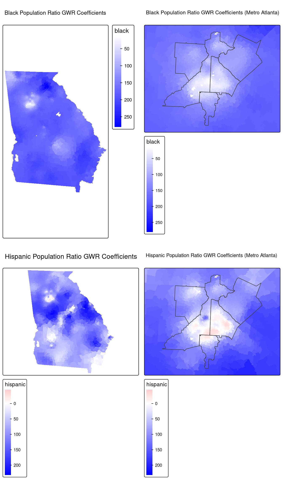
The GWR coefficients for both black population ratio and hispanic population ratio are overwhelmingly positive throughout the state. This is in line with the results of the GAM model, where higher black and Hispanic population ratios were a reliable predictor of democratic voting. While never going negative, the coefficients for the black population ratio are lowest in the Atlanta Metro where the black population ratio is the highest. This matches the findings of the GAM, where the variable is nonlinear at the highest ratios and the marginal effect plateaus. Likewise, the coefficient of the hispanic variable goes slightly negative in this area. This is likely because the black population ratio approach 1 in this area and so a higher hispanic population would mean a lower black population.
map_GWRbachelors = tm_shape(gwr_mod$SDF) + tm_fill(fill="bachelors",fill.scale=tm_scale_continuous(midpoint=0,values=c("red","white","blue"))) + tm_title("Bachelors Ratio GWR Coefficients")
map_GWRbachelors_Atl = tm_shape(gwr_mod$SDF,bbox=metroATL_bb) + tm_fill(fill="bachelors",fill.scale=tm_scale_continuous(midpoint=0,values=c("red","white","blue"))) + tm_shape(metroATL) + tm_borders() + tm_title("Bachelors Ratio GWR Coefficients (Metro Atlanta)")
map_GWRgrad = tm_shape(gwr_mod$SDF) + tm_fill(fill="grad",fill.scale=tm_scale_continuous(midpoint=0,values=c("red","white","blue"))) + tm_title("Graduate Degree Ratio GWR Coefficients")
map_GWRgrad_Atl = tm_shape(gwr_mod$SDF,bbox=metroATL_bb) + tm_fill(fill="grad",fill.scale=tm_scale_continuous(midpoint=0,values=c("red","white","blue"))) + tm_shape(metroATL) + tm_borders() + tm_title("Graduate Degree Ratio GWR Coefficients (Metro Atlanta)")
tmap_arrange(map_GWRbachelors, map_GWRbachelors_Atl, map_GWRgrad, map_GWRgrad_Atl, nrow=2)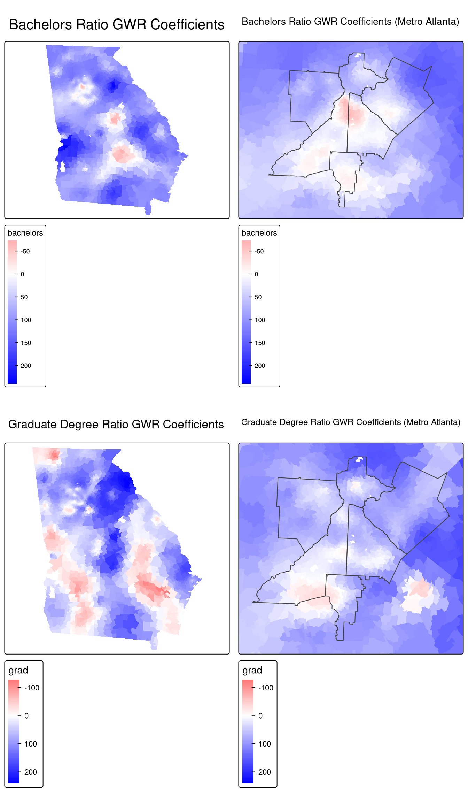
The two education variables do not show as strong a relation to voting as the black and hispanic ratios, however it does appear that through most of the state higher education is correlated with a larger Democratic vote share. However, there are some areas, particularly in Southern Georgia and for graduate degrees, where higher education is correlated with a higher Republican vote share. However, it is possible that this is due to variance because these rural areas have a lower graduate degree ratio. Another area of note is the cluster in North Atlanta where bachelors degree ratio predicts Republican voting - this is the same area which had a cluster of high education, high income, and low black population ratio.
map_GWRincome = tm_shape(gwr_mod$SDF) + tm_fill(fill="medIncome",fill.scale=tm_scale_continuous(midpoint=0,values=c("red","white","blue"))) + tm_title("Median Income GWR Coefficients")
map_GWRincome_Atl = tm_shape(gwr_mod$SDF,bbox=metroATL_bb) + tm_fill(fill="medIncome",fill.scale=tm_scale_continuous(midpoint=0,values=c("red","white","blue")))+ tm_shape(metroATL) + tm_borders() + tm_title("Median Income GWR Coefficients (Metro Atlanta)")
map_GWRpoverty = tm_shape(gwr_mod$SDF) + tm_fill(fill="poverty",fill.scale=tm_scale_continuous(midpoint=0,values=c("red","white","blue"))) + tm_title("Poverty Ratio GWR Coefficients")
map_GWRpoverty_Atl = tm_shape(gwr_mod$SDF,bbox=metroATL_bb) + tm_fill(fill="poverty",fill.scale=tm_scale_continuous(midpoint=0,values=c("red","white","blue")))+ tm_shape(metroATL) + tm_borders() + tm_title("Poverty Ratio GWR Coefficients (Metro Atlanta)")
tmap_arrange(map_GWRincome, map_GWRincome_Atl, map_GWRpoverty, map_GWRpoverty_Atl, nrow=2)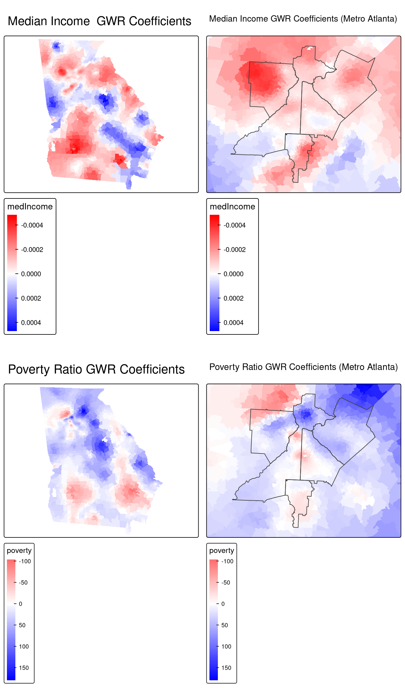
Finally, the two income related maps show a high degree of spatial variance. In some areas, high income appears to predict Republican voting while poverty predicts Democratic voting, while in other areas this relationship is switched. In other areas, both high income and high poverty appear to predict voting for the same party. This appears to be in line with the results of the GAM regression, where it was found that these economic predictors are highly non-linear.
Conclusion
The overall analysis of Moran’s I and spatial autoregression models shows that there is a strong spatial component to the voting distribution in Georgia. While this analysis has shown that a lot of this spatial distribution is due to the urban/rural divide between Metro Atlanta and the rest of the state, there does still appear to be further unaccounted for spatial pattern.
It was found that the relation of the six demograpghic variables to voting outcome differed across different areas. The black population ratio and hispanic population ratio were found to correlate with a higher Democratic voting share across all areas. Education also predicted Democratic voting share, though not as strongly as race. The GWR model showed that there were some areas where a higher education was correlated with a higher Republican vote share. Finally, the income variables were found to have a high degree of variance. The GAM regression showed that their relation to voting may be highly nonlinear and dependent on urban/rural/intermediate status and the GWR model shows a strong spatial variance in their correlation with vote share, being correlated with different parties in different areas.
In conclusion, the data presented in this report shows that the relation between demographic data and partisan voting outcomes is highly mediated by the particularities of geographic location – both in terms of that location’s urban, rural, or intermediate status, and in terms of its spatial relation to other areas. There is the possibility that some of these particularities are due to irreducible cultural or historical characteristics specific to geographic locality. This report has shown that much more can be learned by studying the particularity and nuance of these geographic locals and indicates any analysis of partisan voting patterns should consider these particularities of locality.